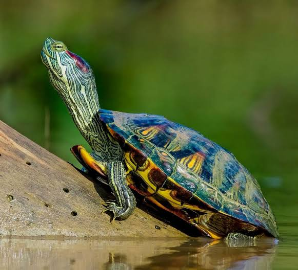
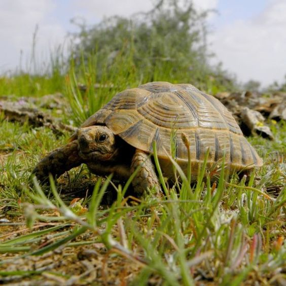
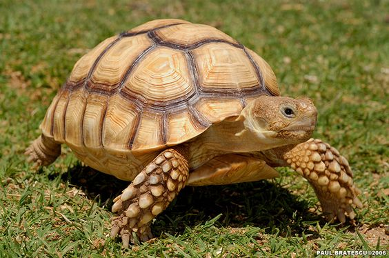
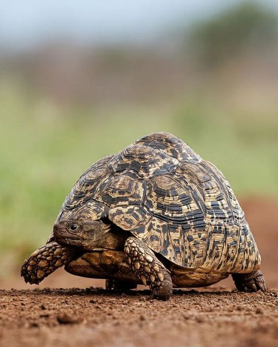
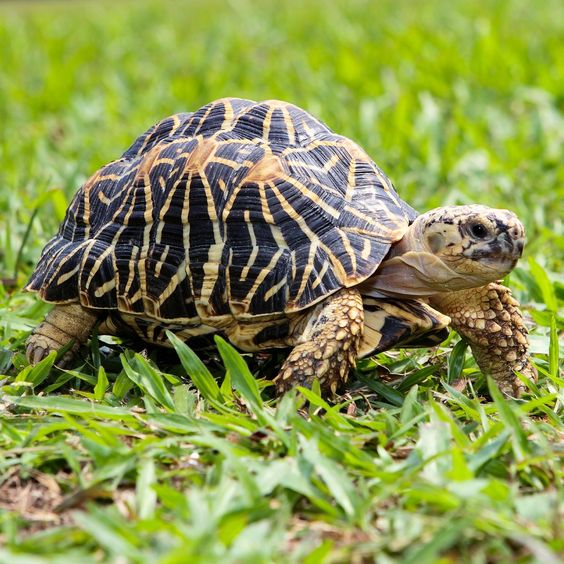
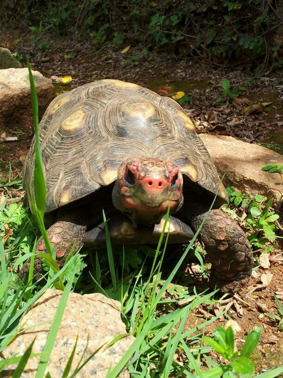
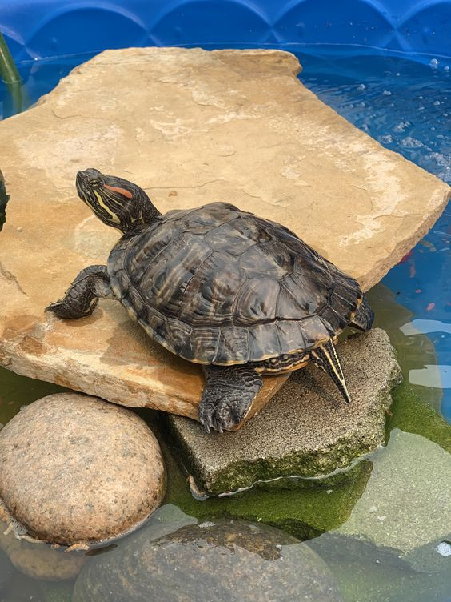

Тип черепах
Ось кілька популярних типів домашніх черепах:
1. Червоновуха черепаха (Trachemys scripta elegans)
Розмір: до 30 см в довжину.
Особливості: Червоні смуги за очима, які і дали назву цьому виду.
Умови утримання: Потребує води та суші, акватераріум з фільтрацією води.
2. Грецька черепаха (Testudo graeca)
Розмір: до 20 см в довжину.
Особливості: Оливково-коричнева панцир з чорними плямами.
Умови утримання: Сухопутна, потребує багато світла і тепла.
3. Леопардова черепаха (Stigmochelys pardalis)
Розмір: до 70 см в довжину.
Особливості: Жовтий панцир з чорними плямами, що нагадують леопардовий візерунок.
Умови утримання: Сухопутна, потребує просторого вольєру.
4. Черепаха звичайна болотна (Emys orbicularis)
Розмір: до 20 см в довжину.
Особливості: Темний панцир з жовтими плямами.
Умови утримання: Потребує води та суші, акватераріум з чистою водою.
5. Середньоазіатська черепаха (Agrionemys horsfieldii)
Розмір: до 25 см в довжину.
Особливості: Круглий панцир світло-коричневого кольору.
Умови утримання: Сухопутна, витривала до посухи, потребує сухого субстрату.
психоголія поведінки
Черепахи мають цікаву і різноманітну поведінку, яку важливо розуміти, щоб краще доглядати за ними. Більшість черепах живуть поодинці і не потребують компанії інших черепах. Вони можуть ставати агресивними, якщо їм не вистачає простору.
Черепахи зазвичай активні вдень. Вони люблять грітися на сонці, щоб підтримувати температуру свого тіла. У природі деякі черепахи впадають у зимову сплячку, і навіть у домашніх умовах вони можуть поводитись по-різному в різні сезони.
Харчування черепах теж залежить від їх виду. Деякі черепахи їдять лише рослини, інші можуть харчуватися і рослинами, і тваринами. Вони можуть бути дуже активними під час годування і шукати їжу по всьому своєму житлу.
Черепахи можуть навчитися розпізнавати своїх господарів. Вони можуть наближатися до стінок свого житла, коли бачать, що ви наближаєтеся, або проявляти інші ознаки цікавості. З часом вони звикають до розкладу годування і можуть очікувати їжу в певний час.
При небезпеці черепахи ховаються у свій панцир або намагаються захиститися, шиплячи або кусаючи. Деякі черепахи маскуються, зливаючись з навколишнім середовищем, щоб не бути поміченими хижаками.
Якщо черепаха почувається комфортно, вона буде активно досліджувати своє середовище, купатися і грітися на суші. Якщо ж вона відчуває стрес, то може уникати певних зон, відмовлятися від їжі, постійно ховатися або намагатися втекти.
Догляд
Середовище проживання
Водні черепахи
Акватераріум: Для водних черепах потрібен акватераріум, який поєднує водну і суху зони. Водна зона повинна бути достатньо глибокою, щоб черепаха могла плавати. Розміри акватераріуму залежать від розміру черепахи. Наприклад, для черепахи розміром 10-15 см потрібен акватераріум об'ємом не менше 150 літрів.
Суха зона: Це місце, де черепаха може виходити на сушу для відпочинку та сушіння. Використовуйте плаский камінь або спеціальну платформу.
Температура води: Водні черепахи потребують води з температурою 22-28°C. Використовуйте нагрівач для акваріуму, щоб підтримувати стабільну температуру.
Сухопутні черепахи
Тераріум: Сухопутним черепахам потрібен просторий тераріум. Для маленьких черепах (до 20 см) достатньо тераріуму розміром 100х50 см. Великі види потребують значно більше простору.
Субстрат: Використовуйте кокосовий субстрат, ґрунт або спеціальні суміші для рептилій, які дозволяють рити нори. Не використовуйте пісок або дрібні камінці, оскільки черепаха може їх випадково проковтнути.
Температура: Підтримуйте температуру в межах 24-30°C вдень і 20-24°C вночі. Під лампою для обігріву температура повинна бути 30-35°C.
Освітлення та обігрів
УФ-освітлення:
Черепахам необхідне УФ-освітлення для синтезу вітаміну D3, який допомагає засвоювати кальцій. Використовуйте спеціальні УФ-лампи для рептилій, які випромінюють УФ-B промені. Лампи потрібно змінювати кожні 6-12 місяців, оскільки з часом ефективність випромінювання знижується.
Обігрів: Лампи для обігріву повинні створювати теплу зону з температурою 30-35°C. Встановлюйте лампи на безпечній висоті, щоб черепаха не обпеклася.
Харчування
Водні черепахи: Водні черепахи зазвичай всеїдні. Їх раціон може включати рибу, комах, водорості та спеціальні корми для черепах. Черепахи також можуть їсти деякі овочі та фрукти. Забезпечте їм додаткове джерело кальцію, наприклад, кістки каракатиці або спеціальні добавки.
Сухопутні черепахи: Сухопутні черепахи, як правило, травоїдні. Їх раціон має включати різноманітні овочі (наприклад, салат, моркву, гарбуз), фрукти (яблука, ягоди) і зелень (кульбаба, конюшина). Уникайте годування черепахи тільки фруктами, оскільки вони містять багато цукру. Також додавайте в раціон кальцієві добавки.
Здоров'я та гігієна
Огляд: Регулярно оглядайте черепаху на наявність ознак хвороб. Звертайте увагу на зміни в поведінці, відмову від їжі, незвичні виділення або рани. Якщо помітили щось незвичайне, звертайтесь до ветеринара, спеціалізованого на рептиліях.
Чистота: Для водних черепах важлива чистота води. Замінюйте частину води (20-30%) щотижня і очищайте акватераріум від залишків їжі та екскрементів. Сухопутні черепахи потребують регулярного очищення їхнього житла від бруду і залишків їжі. Очищуйте субстрат і змінюйте його за потреби.
Соціальні аспекти
Територіальність: Черепахи зазвичай не потребують компанії інших черепах і можуть відчувати стрес, якщо їх тримати разом. Уникайте перенаселеності, щоб не викликати агресію та стрес.
Розпізнавання господаря: Черепахи можуть навчитися розпізнавати своїх господарів. Вони можуть наближатися до стінок свого житла, коли бачать, що ви наближаєтеся, або проявляти інші ознаки цікавості.
Загальні рекомендації
Стрес: Черепахи можуть відчувати стрес через різкі зміни в умовах утримання, галас або надмірну увагу. Забезпечте їм спокійне середовище і уникайте зайвого турбування.
Регулярний режим: Дотримуйтесь регулярного режиму годування та обслуговування. Черепахи швидко звикають до рутини і відчувають себе комфортніше при постійному режимі.
Хвороби
Дерматит і грибкові інфекції
Такі захворювання також частіше проявляються у водних черепах, ніж у сухопутних. Причини, якими викликаються хвороби, — занадто низькі температури, цвіль, занадто рідка зміна води та підстилки, відсутність обігрівальної лампи.
Як визначити: шкіра лущиться й відшаровується на складках, на ній помітні червоні плями, прищі та набрякання. Вихованка розчісує шкіру, на ній з'являються виразки, від панцира відколюються частинки. Якщо у черепахи сухий дерматит панцира, на ньому також з'являються кірка та виразки.
Ступінь складності: висока, може поєднуватися з зараженням крові. Для неї характерні важкий перебіг і довге лікування. Хвору тварину потрібно ізолювати, змінити грунт і воду, збагатити раціон, провести дезінфекцію. Обов'язково зверніться до ветеринара, не лікуйте черепаху самостійно!
Тимпанія шлунка
Причина здуття шлунка, або тимпанії, полягає в нестачі кальцію або перегодовуванні. Найчастіше від здуття страждають водні різновиди черепах.
Як визначити: в калі є не переварена їжа, черепаха може блювати, можливі бульбашки з рота. Вихованка млява, часто не хоче їсти, плаває на одному (частіше правому) боці, має здуття близько ноги в районі шиї.
Ступінь складності: нескладна. Якщо вихованка не відмовляється від їжі, можна вилікувати її в домашніх умовах, порадившись з ветеринаром. Зазвичай допомагає 3-4-денна голодовка.
Стоматит і вірусний герпес
Некротичний стоматит і герпесні інфекції ротової порожнини — одні з найчастіших проблем з черепашачим здоров'ям. Основні причини їх появи — нестача вітамінів А і D в раціоні вашого вихованця. Це заразні захворювання, тому хвору черепаху доведеться відокремити від інших і утримувати при температурі близько +32° C вдень і +28° C вночі.
Як визначити: вихованка млява, її слизова набрякла, надмірно червона або бліда, рясна слина-піна, поганий запах і гнійні пластівці в роті.
Ступінь складності: висока, в більшості випадків призводить до смерті.
Дерматит і грибкові інфекції
Такі захворювання також частіше проявляються у водних черепах, ніж у сухопутних. Причини, якими викликаються хвороби, — занадто низькі температури, цвіль, занадто рідка зміна води та підстилки, відсутність обігрівальної лампи.
Як визначити: шкіра лущиться й відшаровується на складках, на ній помітні червоні плями, прищі та набрякання. Вихованка розчісує шкіру, на ній з'являються виразки, від панцира відколюються частинки. Якщо у черепахи сухий дерматит панцира, на ньому також з'являються кірка та виразки.
Ступінь складності: висока, може поєднуватися з зараженням крові. Для неї характерні важкий перебіг і довге лікування. Хвору тварину потрібно ізолювати, змінити грунт і воду, збагатити раціон, провести дезінфекцію. Обов'язково зверніться до ветеринара, не лікуйте черепаху самостійно!
Гельмінтози
Гельмінти можуть з'явитися у будь-яких черепах.
Як визначити: надмірна активність, розлад травлення, відмова від їжі, наявність паразитів в аналізах або калі.
Ступінь складності: легка.
Рани та переломи
Черепаха може травмуватися, впавши з висоти, отримавши укус тварини, потрапивши під машину або людині під ноги, а також отримавши опік об нагрівач чи лампу.
Як визначити: можуть бути зламані кінцівки або панцир, відкриті рани, опіки на шкірі, набряклість через ушкодження. Поранену поверхню очищають, після чого вихованку варто відвезти до ветеринара. Переломи лікує тільки лікар, невеликі ранки й потертості можна перелічити самостійно.
Породи
Червоновуха черепаха
Червоновухі черепахи – це один з найпопулярніших видів домашніх черепах. Вони мають яскраві червоні смуги за очима, що робить їх легко впізнаваними. Ці черепахи можуть виростати до 30 см у довжину. Червоновухі черепахи – всеїдні, і їхній раціон включає рибу, комах, водорості та спеціальні корми для черепах. Вони потребують акватераріуму з водною і сухою зонами, де вода повинна мати температуру 22-28°C. Важливо забезпечити регулярне очищення води та доступ до УФ-ламп, які необхідні для синтезу вітаміну D3. Червоновухі черепахи люблять грітися на суші, тому наявність спеціальної платформи чи каменю є обов'язковою умовою їхнього утримання.
Грецька черепахаСкалярія
Вони мають сплощене тіло, яке дещо нагадує трикутник. Їх ще називають ангелами, адже вони мають біло-сріблястий колір, який красиво переливається у воді. Для скалярій потрібен великий акваріум (від 100 л). В юному віці ці рибки полюбляють зграю, а от в дорослому надають перевагу життю в парі.
Середньоазіатська черепаха
Грецькі черепахи – це сухопутні черепахи, що мають оливково-коричневий панцир з чорними плямами. Вони виростають до 20 см у довжину і є травоїдними. Їх раціон складається з різноманітних овочів, фруктів та зелені. Грецькі черепахи потребують тераріуму з температурою 24-30°C вдень та субстрату для риття. УФ-лампи необхідні для їхнього здоров'я, оскільки допомагають синтезувати вітамін D3, який сприяє засвоєнню кальцію. Ці черепахи також потребують достатньої кількості простору для пересування та риття.
Леопардова черепаха
Леопардові черепахи вирізняються своїм жовтим панцирем з чорними плямами, що нагадують леопардовий візерунок. Вони можуть досягати розмірів до 70 см. Це сухопутні черепахи, які потребують просторого тераріуму або вольєра з температурою 24-30°C. Леопардові черепахи потребують великої кількості простору для пересування і доступу до УФ-ламп. Вони є травоїдними, тому їх раціон має включати різноманітні овочі та зелень. Ці черепахи мають спокійний характер і зазвичай добре переносять догляд в умовах неволі.
Зірчаста черепаха
Зірчасті черепахи відомі своїм унікальним зірчастим візерунком на панцирі. Вони досягають розмірів до 20 см і є травоїдними. Ці черепахи потребують тераріуму з температурою 24-30°C, високою вологістю і хорошою вентиляцією. Їхній раціон складається з овочів, фруктів і зелені. УФ-лампи є важливими для підтримки їхнього здоров'я. Зірчасті черепахи мають досить спокійний характер, але потребують ретельного догляду та підтримки оптимальних умов для життя.
Кінська черепаха
Кінські черепахи мають чорний панцир з червоними або жовтими плямами і можуть досягати розмірів до 40 см. Вони потребують просторого тераріуму або вольєра з температурою 24-30°C і високою вологістю. УФ-лампи необхідні для синтезу вітаміну D3. Кінські черепахи є всеїдними, їхній раціон включає фрукти, овочі, зелень та іноді білкові добавки. Ці черепахи дуже активні і потребують великої кількості простору для пересування.
Черепаха звичайна болотна
Звичайна болотна черепаха має темний панцир з жовтими плямами і виростає до 20 см у довжину. Вони потребують акватераріуму з чистою водою, температурою 22-28°C, фільтрацією води та доступом до УФ-ламп. Ці черепахи є всеїдними, їхній раціон складається з риби, комах та водоростей. Звичайні болотні черепахи активні і потребують достатньо місця для плавання та сушіння.